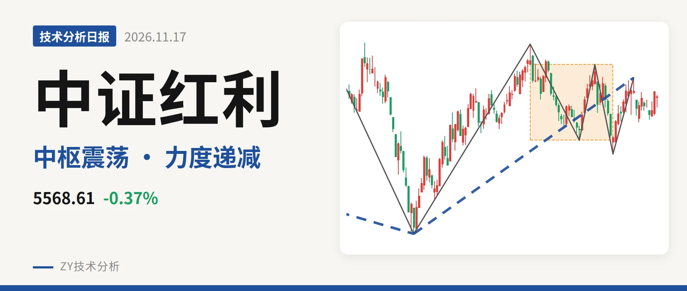
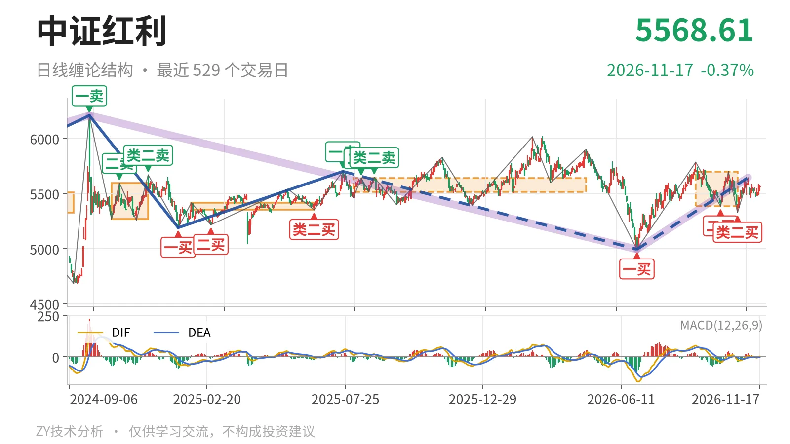
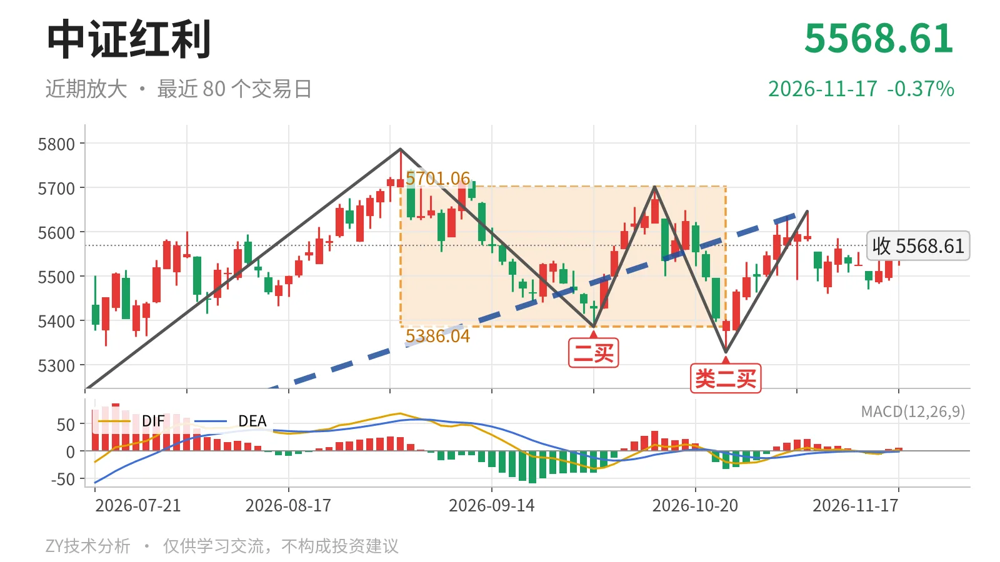

中证红利｜反抽高点递降，5701点仍未收复

最近日线中枢 5386.04—5701.06点，收盘位于中枢之内
一句话：价格位于日线中枢内部，上涨笔力度递减，结构中性
🧭 走势结构：日线下跌段未结束，当前只是反弹修复
6月30日以来走出5笔回升，构成日线上涨线段，最新高点只有5646.01点，仍被2025年7月23日至2026年6月30日下跌线段的起点5702.03点压制。后一下跌线段没有结束，6月30日日线一买4995.49点只带动反抽，并未改变更大结构。更大级别里，2024年10月8日至2026年6月30日的下跌走势也还在延续，因此当前更可能是下跌段内部的修复，而非日线反转。

📊 中枢与位置：最新收盘仍停在最近日线中枢内部
9月1日至10月23日形成日线笔中枢，区间5386.04—5701.06点，中轴5543.55点。11月17日最新收盘5568.61点落在该中枢之内，距上沿约132点，距下沿约183点。该中枢与2025年8月4日至2026年4月30日中枢5518.46—5639.99点明显重叠，重叠区在5518—5640点。两个日线中枢已经扩展成更大的横向区域，走势仍在震荡，中枢没有上移。
🔄 买卖点：10月23日类二买尚在，反抽未出力度
最近的日线笔结构买点是10月23日类二买，取当日最低5328.30点，所在笔10月14日至10月23日已结束。随后10月23日至11月4日上涨笔只到5646.01点，没有超过9月29日至10月14日上涨笔高点5701.06点，说明该买点未推动价格脱离中枢。更早的2025年7月23日一卖5702.03点、2025年8月12日二卖5639.99点、2025年8月26日类二卖5649.82点，一个比一个低，但之后被2025年9月18日至2025年11月14日上涨笔高点5828.73点全部升破，因此这些卖点只对应较小级别转折，不能作为日线反弹顶部。当前11月5日至11月17日尚未成笔的走势最高5589.29点，仍未触及5701点。

⚡ 背驰：下跌笔新低不新弱，类二买有力度信号
最关键的背驰在10月14日至10月23日下跌笔与9月1日至9月29日下跌笔之间。前者低点5328.30点比后者低点5386.04点更低，但绿柱面积由561缩至53，DIF低点由-32.7回升至-20.4，属于“新低不新弱”。这是10月23日类二买能成立的结构基础。不过此后10月23日至11月4日上涨笔红柱面积仅65、DIF高点5.7，反弹没有把背驰转化为向上突破。最新MACD的DIF虽在零轴上方为1.8，但柱体只有6.2，仍属弱平衡。
🧭 关键位置观察：5701点与5328点定短线强弱
结构上，5701点一线是最近日线中枢上沿，5386点一线是下沿。若价格重新站上5701点附近，则中枢震荡偏强，10月23日以来的回落更可能只是中枢扩展；若反抽回不到5701点上方，随后又跌破5386点附近，则中枢下沿失守，价格先看5328点附近。再跌破5328点附近，10月23日类二买被破坏，结构上要回到6月30日一买4995点附近。当前价格夹在5701点与5328点之间，DIF虽在零轴上方但上攻不持续，结构中性。
⚠️ 本文为基于公开行情数据的缠论技术结构记录，由程序自动计算并生成，仅供学习交流，不构成任何投资建议。市场有风险，投资需谨慎。